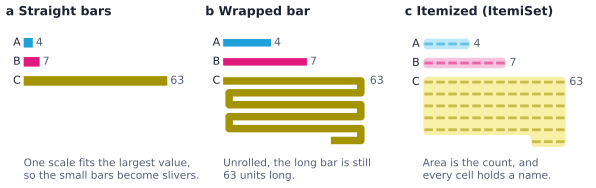

The Du Bois method: expanding the boundaries of information design
From Playfair’s bars to Du Bois’s coils
In 1786 the Scottish engineer and political economist William Playfair published The Commercial and Political Atlas (Playfair 1786; facsimile in Playfair 2005). Most of its plates are line charts of England’s trade over time. For Scotland he had figures for only one year, so one plate shows Scotland’s exports and imports, place by place, from Christmas 1780 to Christmas 1781, as horizontal bars. It is usually counted as the first bar chart, and as the first quantitative graph whose axis is neither space nor time (Beniger and Robyn 1978; see also Funkhouser 1937).
Playfair’s charts set conventions that statistical graphics still follow: bars share a baseline, and every length is drawn to one scale. A little over a century later, W. E. B. Du Bois and a team at Atlanta University stretched those conventions. For the American Negro exhibit at the 1900 Paris Exposition, assembled by Thomas J. Calloway, Du Bois and Daniel A. P. Murray, the team drew a series of hand-made charts of Black life in Georgia and across the United States, made to answer prejudice with evidence (Lindberg 2020; Battle-Baptiste and Rusert 2018; Library of Congress, n.d.).
The outlier problem on a rectangular page
A bar chart struggles when one value dwarfs the rest. On a page of fixed size, the designer has two poor choices (Lohr 2019):
- Fit the scale to the largest value, and the small bars shrink to slivers that are hard to read or compare.
- Break the axis (a “gapped” bar), and the largest bar no longer shows how much larger it really is. Broken and cut-off axes are common, but they are known to mislead readers (Karduni et al. 2020).
Coiling the long bar
Du Bois’s team found a third way: keep the long bar unbroken, but bend it. In City and Rural Population. 1890, from the Georgia series, the small city populations are short straight bars, while the rural population, by far the largest group, is drawn as a large red coil (Du Bois 1900; Lindberg 2020). The other bars can then use a scale at which they stay legible, and the coiled bar, if straightened, would still be exactly as long as its value requires (Lohr 2019; Yau 2017). It was not a one-off: Karduni and colleagues reproduce three of Du Bois’s charts that wrap their largest bar, among them a chart of occupations (Karduni et al. 2020).
The idea has since been tested. Karduni and colleagues turned it into the Du Bois wrapped bar chart and compared it with standard bar charts in crowdsourced experiments. When values were very unequal, readers of the wrapped charts identified the smallest values and estimated ratios between bars more accurately. The cost was speed: wrapped bars took longer to read, especially when a bar wrapped many times (Karduni et al. 2020).
From coils to discorectilinear polygons
ItemiSet takes the same step with cells instead of ink. Every item (a gene, a protein, a country) gets one cell, so a region’s area is exactly its count. A long run of cells is never cut or rescaled. Instead it is folded back and forth, row by row or column by column, the way Du Bois folded his longest bar, so a region of 63 items can sit beside a region of 4 and both stay readable.
The folded run is drawn as one shape: the union of its cells, inset slightly and with its corners rounded. We call this a discorectilinear polygon: a rectilinear polygon assembled from discrete grid cells. ItemiSet uses it in both of its grid layouts:
- In an Euler diagram, each column group is filled back and forth from a common baseline, so every zone is one connected run of cells.
- In a treemap, the cells follow one back-and-forth path through the whole grid, and every group at every depth gets a contiguous stretch of it.

There are two differences from Du Bois’s coils. A wrapped bar keeps length proportional to the value; ItemiSet keeps area proportional, which a fold of whole cells does exactly. And because each cell carries an item’s name, the folded region is not only a measure of how many: it is also the list of which ones.
The figure above is drawn by tools/du_bois_figure.py with the library’s own outline code (itemiset.core.outline.rounded_region).
Further reading
- The Library of Congress holds the original charts, in its collection African American Photographs Assembled for 1900 Paris Exposition (Library of Congress, n.d.). The coiled chart discussed here is City and Rural Population. 1890 (Du Bois 1900).
- Battle-Baptiste and Rusert reproduce the full series in colour, with essays on its history (Battle-Baptiste and Rusert 2018).
- Sharon Lohr explains why the serpentine bar solves the outlier problem (Lohr 2019); Nathan Yau’s FlowingData post gives an overview of the collection (Yau 2017); and Tableau’s blog sets the exhibit in its social and political context (Tableau 2019).